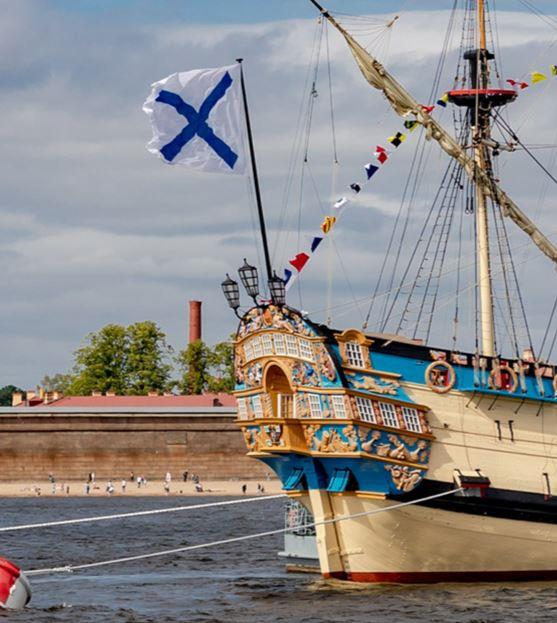
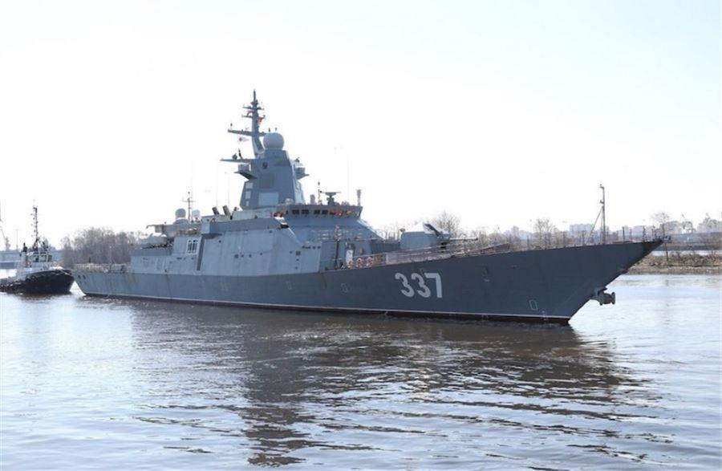

La journée de la Marine en Russie a été célébrée ce 26 juillet, le dernier dimanche du mois comme le veut la tradition. Dans la ville portuaire de St Saint-Pétersbourg, plus de 45 navires, corvettes et sous-marins ont défilé dans les eaux de la Neva, sous les yeux du président russe et commandant en chef des armée. Vladimir Poutine, désireux, a-t-il dit dans son discours d’ouverture, « de démontrer la puissance croissante de la Marine russe ». Ayant assisté à l’édition 2019, l’auteur de ces lignes va essayer de rendre au mieux l’atmosphère si particulière de cette journée.
À l’image d’autres pays, la Marine Russe n’est pas la principale des trois Armées : les contraintes de la géographie et la mémoire des guerres passées expliquent facilement cette situation, que l’on retrouve dans d’autres pays du monde dans une situation similaire : Afrique du Sud, Turquie, Allemagne, Yougoslavie, Pologne… La Marine Soviétique de l’amiral Gorchkov (qui passa trente ans à la tête de celle-ci, de 1955 à 1985, probablement un record mondial !) fut par contre quelque chose de gigantesque, avant de perdre de son lustre à la fin de l’Union Soviétique.
C’est pour rétablir une certaine balance et la remettre sur le devant de la scène vis-à-vis de la population que cette journée qui remontait à d’anciennes traditions tsaristes, a été rétablie en 1992.
Comme à chaque arrivée à Saint-Pétersbourg, c’est le soleil et le bleu du ciel qui s’imposent au visiteur, en ces longues journées d’été aux crépuscules interminables. Attention cependant, comme en Bretagne, un rapide passage nuageux et une petite averse sont toujours possibles, pour être oubliés une petite heure après.
Tout est prêt en ville, des groupes de joyeux anciens marins – c’est leur journée, comme il y a celle des troupes aéroportées russes le 2 août chaque année – aux vendeurs de souvenirs et de boissons qui ont installé leurs stands, à la grandiose place du palais de l’Ermitage qui accueillera concerts et troupes de danseurs toute cette journée, et toujours cette foule bon enfant, qui s’attarde le long de Nevski Prospekt et des canaux.
Une petite exposition de matériels militaires en cours d’installation dans la pénombre nous donnera l’occasion d’aller toucher de près lance-missiles Pantsir et S-400…. mais ce n’est pas de là que viendront les problèmes – car d’une année sur l’autre, on avait oublié : vers 23 heures, marchant bien sagement sur le chemin de notre excellent hôtel de l’île Vassilievski, on progresse, la foule est dense, et là à l’angle de l’Ermitage, on ne veut pas croire ce que nos yeux commencent à réaliser : c’est une travée de pont qui s’élève au-dessus des têtes, pour prendre une position quasi-verticale tandis que de part et d’autre s’élance sur la rivière une nuée de cargos, de péniches et de remorqueurs – spectacle grandiose certes, mais qui perd un peu de sa saveur quand vous réalisez que tout cette navigation a été retenue pendant toute la journée sur la Neva, et que ça ne s’écoulera pas en cinq minutes…ce que confirment assez rapidement policiers et autres compagnons d’infortune.
Un petit effort de vision lointaine vous faisant rapidement comprendre que de part et d’autre, et en plus assez loin, les autres ponts sont aussi relevés (sinon, où serait l’intérêt pour la navigation ?) et que prendre le métro n’est pas non plus une option vu le positionnement des stations, voilà donc deux heures à patienter alors que la soirée était terminée.
Prenez les devants et persuadez votre collègue féminine que ce n’est pas une version locale du coup de la panne (encore qu’au vu de la fréquentation des quais et de la jeune population rassemblée, il soit permis d’en douter…) Nous en profiterons pour aller voir près de l’Amirauté les tribunes en cours de montage, je m’installerai à minuit au piédestal d’où le président Poutine s’adressera à la foule le lendemain, sans qu’on me demande quoique ce soit (imagine-t-on ça chez nous ?)
Les ponts étant redescendus vers deux heures du matin, et après donc une courte nuit (rendue plus éprouvante par la lumière du jour revenue peu après) il faudra vite aller se mettre en place le long de la rivière, face aux tribunes officielles. Il y avait un choix à faire, la Neva étant ce qu’elle est : de faible profondeur, elle ne peut bien évidemment pas accueillir de grandes unités navales, seulement des patrouilleurs et vedettes lance-missiles, dragueurs de mines, et une ou deux grandes frégates que l’on laissera soigneusement à l’ancre face à l’Amirauté.
Les majestueux bâtiments de combat en ligne de file, tous pavois au vent, le croiseur « Pierre-le-Grand » (certaines années) ou les grands sous-marins nucléaires, tous sont en eaux profondes à la sortie du port, près des immenses installations de l’arsenal de Cronstadt, et donc fort loin du centre-ville, et encore plus en cette journée où les vedettes touristiques auront été arrêtées pour la matinée. Cela donne à la télévision l’illusion que tout se passe en même temps (oui) et au même endroit (non !) mais pour le spectacle des grands navires, le peu de monde sur les jetées de ce qui sont manifestement des installations militaires, nous fera comprendre qu’il s’agit de familles et d’officiels.
Nous choisirons donc la facilité et le moindre risque, et resterons sur le quai de l’Université, en face du siège de la marine Russe – comme partout dans ce genre d’événements, vite prendre sa place en premier rang de balustrade, et accepter d’y passer deux heures pour commencer.
Le président Poutine sortira de la forteresse Pierre et Paul, embarquera dans une des deux vedettes blanches, et débutera la revue, accueilli par les hourras des équipages alignés. Un voilier historique, puis dans la partie la moins profonde de la rivière, deux petites corvettes de classe « Steregushchiy » et « Buyan », cette dernière venue de Kaliningrad (un de ces navires compacts, qui passèrent aussi par les canaux entre la Caspienne et la mer Noire, pour venir tirer les fameux missiles Kalibr sur la Syrie).
Au fil de la descente, après le pont Dvortsovy (le fautif de la nuit !) le Président passera devant les deux splendides frégates « Amiral Kasatonov » et « Gremashchiy », les dernières rentrées en service dans la Marine Russe, puis rejoindra sa place devant l’Amirauté, pour une revue des troupes suivie d’un émouvant discours, juste avant le défilé des navires de combat côtiers au faible tirant d’eau, avec notamment cette année des navires chinois, indiens, vietnamiens et philippins. France et Angleterre font leurs revues navales en mer, le long de la côte, ce qui donne d’impressionnantes et dynamiques lignes de file de grands bâtiments.
Frégate « Amiral Kasatonov »

Frégate « Gremashchiy »
Ici le choix a été fait d’en faire la plus grande partie au centre-ville, devant les grands bâtiments de l’état-major de la Marine, et au milieu d’un environnement grandiose (Ermitage, Forteresse Pierre et Paul...) ce qui est assez unique au monde.
Viendra ensuite pour terminer, le défilé aérien, tous des avions de l’Aéronavale russe : chasseurs et bombardiers, hélicoptères et avions de patrouille maritime, et parmi ceux-ci les toujours impressionnants Tupolev-95 avec leurs hélices contrarotatives au bruit inimitable. Il est bon de savoir que les aéronefs de la Marine Russe portent tous en insigne le drapeau de la flotte, blanc à diagonales bleues.
Ce jour de la Marine ne se tient pas qu’à St-Pétersbourg : à Mourmansk, Vladivostok, Sébastopol, les navires basés donneront une belle représentation aux familles et aux enthousiastes – mais on ne peut pas être partout à la fois, comme chacun sait, et ce sera la télévision qui nous permettra d’en profiter le lendemain. Ceux de la mer Noire feront des démonstrations de tir à la sortie du port (une idée pour le prochain voyage ?)... et enfin les nombreuses unités basées en Méditerranée orientale à Tartouse en Syrie feront elles aussi une émouvante et très complète cérémonie, avec le concours des aéronefs de la base de Hmeimin.
Tous les spectateurs se disperseront vite en fin de matinée, et il nous restera l’après-midi pour profiter de l’animation de cette si belle ville, si animée en été.
Un décollage crépusculaire nous fera manquer de peu un feu d’artifice qui s’annonçait grandiose – on ne pouvait pas tout avoir lors d’une escale de 24 heures, et donc il faudra revenir, ce qui est bien notre intention.
Au final, une journée certes moins impressionnante que le 9 mai à Moscou, mais la finalité n’est pas la même, c’est une fête plus qu’une commémoration, et qui mérite amplement que l’on cale son prochain voyage à St-Petersburg sur ce dernier dimanche de juillet…


Partager cette page